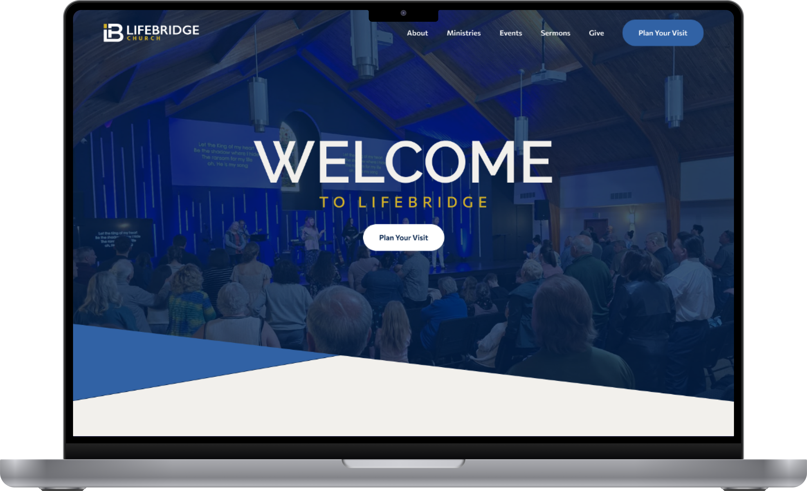
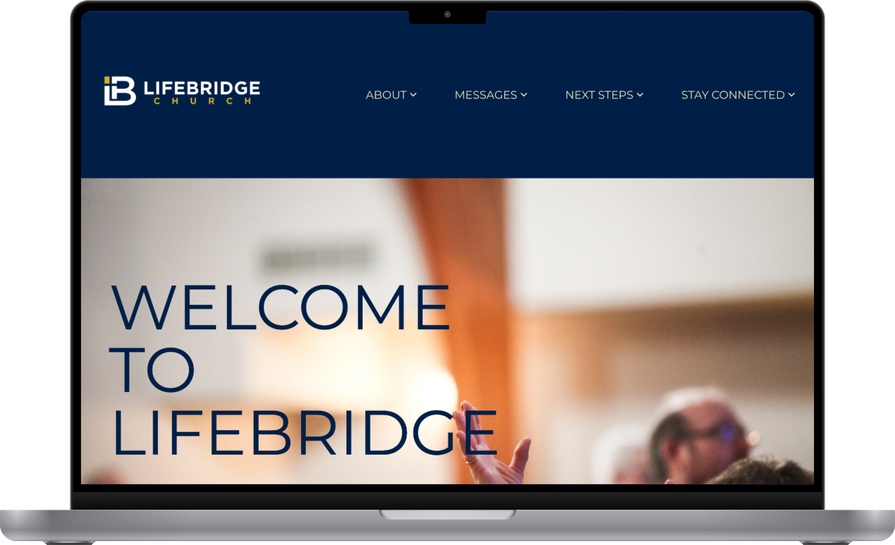
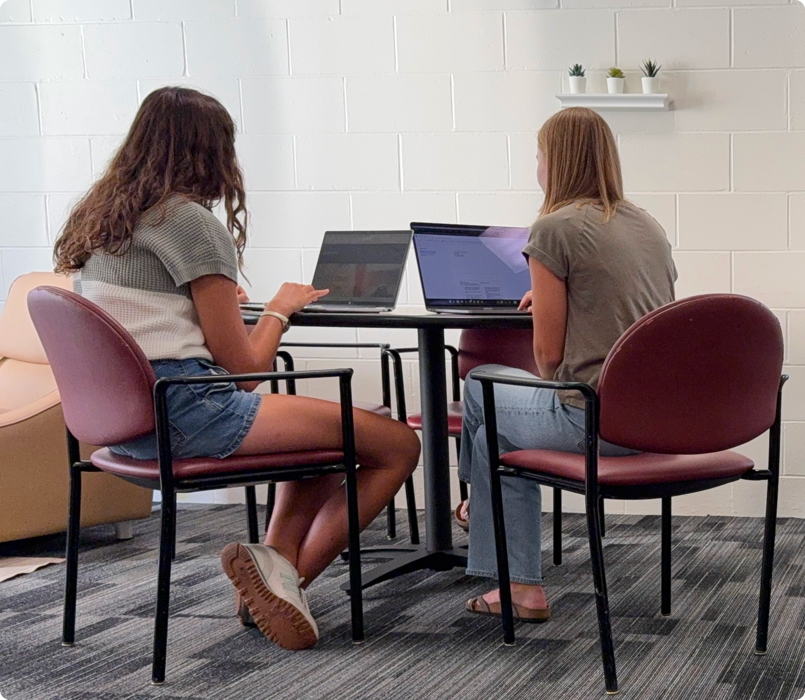
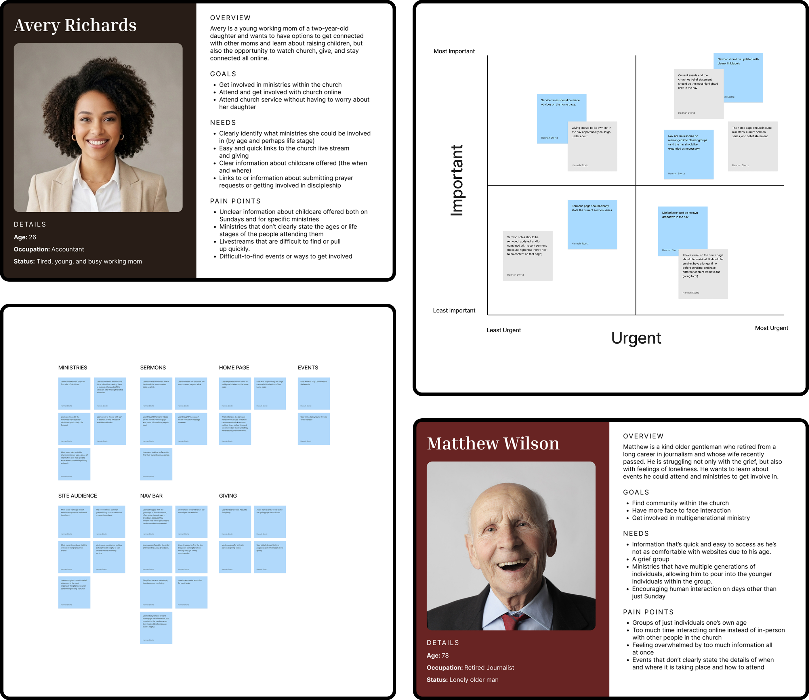
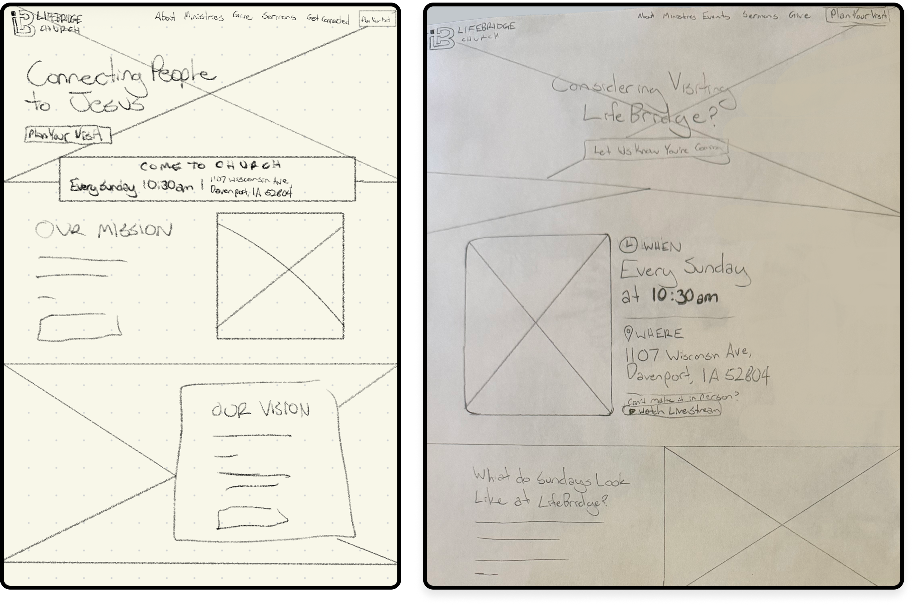

LifeBridge Church
View the Desktop Prototype

Project Overview
This exploratory project focused on redesigning the LifeBridge Church website to make important information easier to find. When I first visited the website, I noticed some usability issues with the navigation and page structure. Although the church did not hire me, I sought to address those issues through a navigation, homepage, and giving page redesign and by creating a new “What to Expect” page.
Design Challenge
People considering visiting the church struggled to find service times, ministries, giving options, and sermon information on the homepage and in the navigation. Many navigation labels were generic, which meant users often had to try multiple dropdowns before finding the information they wanted.
Research & Findings
I began with user testing of the existing website and a user survey to understand how people use church websites and what information they need. The initial testing included both users of various ages and genders. These findings produced a few key takeaways.
- Navigation labels were too general. Users often tried several dropdowns before finding the link they wanted.
- The giving page created confusion. It began with information about why we give, which led some users to question whether they could actually give through the church.
- Current members wanted to find upcoming events. The website needed to support people already attending the church as well as potential visitors.
- Many respondents preferred giving in person. This pointed to the importance of explaining multiple ways to give rather than focusing only on online giving.


Defining the Direction
With that research in mind, I created user personas, an affinity map, and a two-by-two matrix to help narrow in on a solution.
The personas represented two types of people likely to visit a church website, based on my survey findings. The first was a young mom looking for ways to connect with other moms and access information about the church both online and in person. The second was an older gentleman who wanted to get involved in the community and connect face-to-face with people of different ages and life stages.
I also grouped my research findings into an affinity map, which helped identify navigation, giving, and ministries as major pain points. Finally, I used a two-by-two matrix to prioritize potential changes, keeping my focus on the navigation and homepage.
Explorations & Testing
Using this research as a starting point, I began sketching ideas and refined them into a paper prototype. I then tested the prototype with users to see whether the updated structure helped them find information.
This testing revealed that I needed to add a “What to Expect” page under the About dropdown and a link to serving opportunities under Ministries. I also learned that calls to action and information about when and where services take place were easily overlooked. With that feedback in mind, I used color and hierarchy to help those details stand out.
I then brought the designs into Figma, working through mid- and high-fidelity prototypes to develop the final design.

Outcome
With the final prototype complete, I conducted a final round of user testing to see whether the changes helped. Participants found information more quickly and felt more confident choosing which dropdown to look under.
Throughout the project, testing helped me identify information and navigation needs I had not initially considered. These findings guided the design from the first sketches through the final prototype, helping me make decisions based on how people actually looked for information.
View the Desktop Prototype